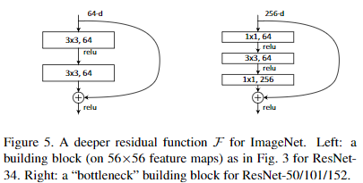
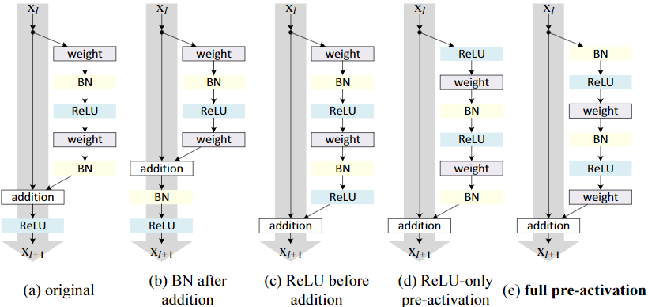
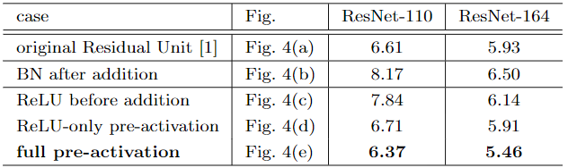

ResNet
在论文《Deep Residual Learning for Image Recognition》中提出了ResNet结构，其主要目的是使更深层的模型训练变得更加容易。
ResNet的主要特点在于其残差块（Residual Block）结构，如下图所示，其中左边为ResNet-18和ResNet-34中使用的残差块结构，右边则是ResNet-50、ResNet-101、ResNet-152使用的残差快结构，两者不同之处在于瓶颈层（BottleNeck）的使用，瓶颈层的作用主要是减少参数量和运算量。

在原论文中，上图的曲线连接被称为“identity mapping”，通过这样的短连接，显式地改变了模型所模拟的映射函数，从\(H(x)\)变成\(H(x) + x\)，这里的相加操作有两个细节：1、如果\(H(x)\)的通道数和\(x\)不一样，那么\(x\)需要调整通道数，论文中尝试了三种方案，第一种是使用0填充，第二种是仅仅在通道数不一样的层使用\(1\times 1\)卷积来调整通道，第三种是所有的residual block中都使用\(1\times 1\)卷积，实验结果发现第三种方案最好，但是作者解释说这主要是因为参数量上升带来的性能增加，而且和第二种方案相比效果提升不大，因此最终还是用的第二种方案。2、如果除了通道不一样，\(H(x)\)的大小和\(x\)也不一样，那么在\(x\)上使用的\(1\times 1\)卷积的stride设置为2。
对ResNet的理解
ResNet中的短连接主要有两个好处：短连接使得梯度的传递更加稳定，短连接显式的增加了特征利用率，使得模型的深层仍然可以看到浅层特征。
Residual Block还有一个好处是可以让模型自由的选择深度，例如模型在最后几层如果觉得在加深深度没有效果，完全可以把最后几层的\(H(x)\)中的参数学习为全0，这样最后几层相当于没有任何的操作，从而让学习过程来决定模型的深度。
ResNet在设计的过程中，可以借鉴的一个思路是：设计模型结构的时候，如果能够保证模型参数在某个情况下能够使得当前模型和没有改变结构时的原始模型相同，那么设计出来的模型结构效果下限也就是原来的模型了。
ResNetV2
在论文《Identity Mappings in Deep Residual Networks》中，提出了ResNetV2结构，这里主要是将Residual Block的结构做了一些修改，如下图所示，其中（a）图为原始的Residual Block结构，（e）图为ResNetV2的Residual Block结构，其余结构在论文中也有实验，但是最终发现（e）图所示结构效果最佳。

上图五种结构的实验结果如下表，其中数字代表分类错误率。

以上结构中，（b）图的结构表现非常差，我认为其原因在于addition之前两个分支的分布不统一，导致在addition之后经过BN层时对identity mapping的输出分布有一定程度上的扰乱（也可以理解为identity mapping因为已经经过BN层，因此方差小，但是另一个分支方差大，导致经过BN层之后，基本上只保留了另外一个分支的信号）。
（c）图中效果差的原因我认为主要是ReLU在addition之前，导致每次相加都是加的一个非负值，因此限制了模型的信号强度只能越来越大，模型的表达能力受限。
（d）图的结果其实和（a）图接近，我认为这两个结构比（e）图稍差的地方在于：在经过权重层之前，信号的分布已经被打乱且没有经过BN层的整合，减弱了BN层在整个模型中的作用。